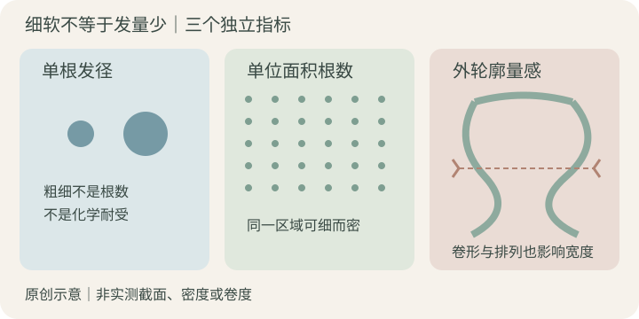
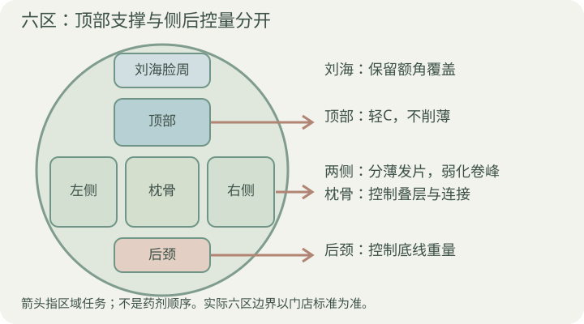
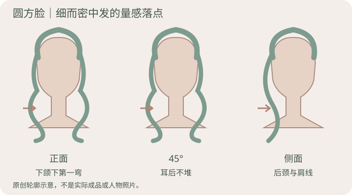

2026-11-27
【今日核心问题】单根细软、顶部贴、两侧发量多，为什么全头加卷反而可能显头大？
【新增判断能力】把发径、单位头皮面积毛发根数、毛束重量及可见轮廓分别记录。昨天研究干燥方式，今天只深入细而密的量感分配。
发径是单根横截面大小，密度是单位头皮面积的根数；发量手感还受长度、截面、摩擦和排列影响。外轮廓则取决于根向、层次、弯度、发束空隙和头型。细软发可以密集，少量粗发也可能露出头皮。不能用马尾粗细反推单根发径。
在均质圆截面简化梁模型中，弯曲刚度 EI，I=πd⁴/64；若E相同，直径70与50微米的假想单丝刚度比约3.84。只是数学示例，不是真人测试。发束不能直接按根数乘以该比值，因为发丝会滑移、接触且受重力。
毛鳞片参与保护和摩擦；皮质层角蛋白中间丝及相关蛋白主要承力，部分发有髓质；二硫键是较持久的共价交联，氢键、盐键/离子和疏水作用共同参与稳定。水分改变氢键、塑化和黏弹性；玻璃化和结构松弛解释温湿时间响应，不是热烫安全温度。TGA/半胱胺等在厂家允许条件下还原部分可接近二硫键，CA简称需核对实际成分，pH不等于药力。水洗按说明减少可洗出还原剂；卷绕张力、杠轴、发片宽厚建立几何约束；热和时间仅按兼容设备及药剂说明；干燥冷却不能代替配套氧化，氧化参与部分交联重建而非修复全部损伤。
即时卷形、24小时和多洗持久、损伤必须独立观察。新生、旧染、旧烫、旧漂分段记录；湿态异常伸长、撤力恢复差、发黏、断丝或头皮明显刺激应停止相关处理。细软、密度高都不能自动推断药力。
2026-11-20至27日优先检索，未找到直接比较细而密真人六区热烫方案的近七日可靠新对照。采用2006年毛束手感研究、2026年6月投影量感研究与1995年力学模型。研究证据均为中等：适于解释变量区分，不构成真人参数。2026年研究在特定毛束与图像框架中得到约3平方厘米感知差异阈值；不是头围、脸型或去量指标。科研解释原理，具体厂家说明决定化学工艺，教材规范术语，门店八步六区经验需要验证。
模拟教学案例，非真实顾客。30岁，简洁休闲、希望轻熟自然；圆方脸、颧骨略宽、下颌角明显、平顶、圆枕、中短颈、肩宽。锁骨下5厘米，中低层次，发径整体细软，顶部中等密度、两侧和枕下高密度，耳前稍少；左侧弱C、右耳后天然外C，后颈向右。新生约8厘米，中段曾氧化染一次和旧烫，末端局部旧漂2厘米。隔天洗发，愿轻吹4分钟。数字均为虚构设定。
参考图为顶部柔C、颧骨收紧、下颌下第一弯、锁骨柔S，只有正面，可能经过吹整。需求：自然、不要小卷、显脸小、顶部不贴而两侧不鼓。最大风险是见细软就全头小杠强支撑或大幅去量；旧漂尾耐受不足时仍强行烫。先确认化学历史和头皮、干湿恢复、有效长度及产品适用性。
八步：自然轻熟风格；圆方脸与中短颈宽肩适配；保留安全锁骨长度；顶部柔C、两侧收紧；顶部和耳前保密度、侧后局部保守层次调整；偏分长刘海弱C；下颌下第一弯和锁骨柔S；自然干与4分钟轻吹分别验证。剪裁先建立骨架，密厚区局部释放内部重量，但不统一打薄底线、不削空耳前。若旧漂尾不可处理，修短或改为单柔C/非化学造型。
未指定品牌，不提供虚构pH、浓度、软化百分比、涂药次序或加热时长。实际选厂家明确适用的完整还原与配套氧化体系，按厂家规定观察终点、记录每区首次接触与停止时间，异常立即停止；冲水按说明，记录可见滴水/均湿/偏干，不称含水率。密区分薄发片、宽度适配有效杠面、尾纸平整、温和张力。起绕与圈数以实际长度和目标第一弯试排。热、时间、干燥、冷却、二剂均遵守兼容工艺。
预期顶部轻支撑、颧骨不鼓、下颌下第一弯、锁骨松S、45度耳后自然、后颈无堆积。整理先根部温和移动送风，中段托束，不强拉旧尾。若侧后鼓，先查发量分配、发片与卷峰，不直接补药补热；断丝失弹则停止并调整设计。
正面：顶部增加有限纵向支撑，太阳穴及耳前保留覆盖，颧骨横向宽度收敛，下颌以下第一弯，主卷峰近锁骨且避开肩线堆积。45度：观察右耳后天然外C和枕骨卷峰是否叠加，密区可少卷、错开第一弯，不等于无条件削薄。侧面：枕骨已有圆度，不再补高；后颈与短颈宽肩留出空间。背面查层次与底线连续性。量感是视觉结果，不是根数。换成长脸低密度或长颈窄肩人物应重新定位顶部、第一弯和侧后重量，不套统一脸型答案。
图一看单根截面、单位面积根数和整束轮廓，箭头标可见宽度，不是实测。图二看六区任务：顶部轻C、耳前覆盖、侧后控量、后颈底线，箭头不是涂药顺序。图三看正面第一弯、45度耳后、侧面肩颈的不同目标。三图均原创教学示意，不是人物成品证据。



以下角度和杠径仅为无药无热公仔头练习候选，以局部头皮切线为0度，不是厂家参数。
顶部30–34mm、20–35°，顺根向提升，少量柔C，保留密度；枕骨32–36mm、15–25°，顺后部毛流过度，密区分薄发片、错开侧区卷峰；左侧32–36mm、10–25°，微向后过度，保护耳前覆盖；右侧同类大杠，10–25°为试排起点，依天然外C调整杠轴，不镜像；后颈不卷或大杠、0–15°顺根向，底线控量；刘海脸周依有效长度选杠，顺额角分缝，弱C或不卷。各区实际圈数按起绕点及发长记录，不强凑；统一温和张力，发片宽厚单独记录，避免卷峰重叠。
压根查夹具落点；炸根查根向提升；硬折查尾纸折尾张力；尾翘查毛流卷向衣领；断层查层次和第一弯；流向冲突查相邻杠轴；后颈堆积查重量和主卷峰；顶部贴与两侧鼓先分别观察密度和形态。
先问：①平时顶部贴还是侧后最鼓？②自然干还是能轻吹4分钟？③不要太卷是不要小卷还是第一弯也要淡？④显脸小想修饰颧骨、下颌还是耳后？⑤各段漂染烫史、若旧尾不适合再烫能否改设计？
模拟对话：顾客：我头发很细，怎么烫完反而头大？发型师：单根细并不代表总发量少，你的侧后密度高，顶部和两侧任务不同。顾客：那打薄就好了？发型师：先保留耳前覆盖和底线，再局部调重量，顶部轻C，两侧减少重复卷峰。顾客：照片能完全一样吗？发型师：照片有吹整因素，我们分别确认自然干和4分钟整理。持久取决于发质、工艺和习惯，不保证固定时间。
可复制话术：细软不等于发量少。我们先把单根粗细、各区密度和轮廓分开，再决定顶部支撑、两侧收敛和下颌第一弯。根据实际产品与化学历史确认安全后执行；旧漂尾不适合再处理就调整长度与卷度，不靠强药、补热或过度打薄解决。
题1：细软而密，是否应该全头小杠？答：不，应先分区决定支撑和控量，小杠可能增加侧后纹理及视觉宽度。
题2：假想70微米与50微米单丝，能推算药力比3.84吗？答：不能，四次方是理想几何模型，不代表还原、损伤或耐受。
题3：顶部贴、两侧鼓怎么区分？答：观察根向、分缝、密度、第一弯、层次，顶部保密度柔C，侧后分薄试排并错开卷峰。
题4：参考图下摆很实但希望轻盈怎么办？答：保留参与主S的长度和耳前覆盖，密厚区域局部调量，固定三视角检查。
题5：旧漂尾湿态失弹但坚持松S？答：停止高风险处理，评估安全有效长度，改单C或非化学造型。
思考路径：发径/密度/轮廓独立观察→化学历史与安全→八步设计→六区任务→无药试排→厂家工艺→自然干及多洗复盘。
离体毛束单变量：同一来源相同长度、弯度、发径的毛束，改变固定宽度内的总毛量，观察外轮廓。8束随机分A/B各4，A组低毛量、B组约双倍毛量；具体克数按电子秤记录，不预设结果。固定根端夹持宽度、发长、来源、干湿状态、自然垂挂、温湿度、照明和手机机位；毛量也会改变重量与接触，实验不能单独测材料模量或头皮密度。材料：同批离体毛、软夹、水平支架、秤、清水、吸水纸、标尺、手机、计时器、温湿度计。逐束编号称重，固定相同宽度根端，轻按吸水后自然干，不加热不梳拉。拍正面和侧面，记录最大宽度、第一弯、投影轮廓。24小时复拍；两轮统一清水复湿自然干。空表逐束填写：编号｜毛量g｜根端宽mm｜自然干最大宽mm｜第一弯位置｜24h｜复湿1｜复湿2；A01-04、B01-04全部待测。实验未做，结果为空。保留无差异与反向结果。若重复稳定，则把区域密度、发片厚度、三视角宽度加入门店日常训练；不直接转换为去量比例、药力或真实密度。
一原理：单根粗细、根数密度和整头外轮廓是不同层次。 一错误：细软发全头加卷或全头打薄，试图同时解决顶部贴与两侧鼓。 下次观察：同源毛束固定根端宽度，仅改变毛量，记录三视角宽度及复湿后第一弯。